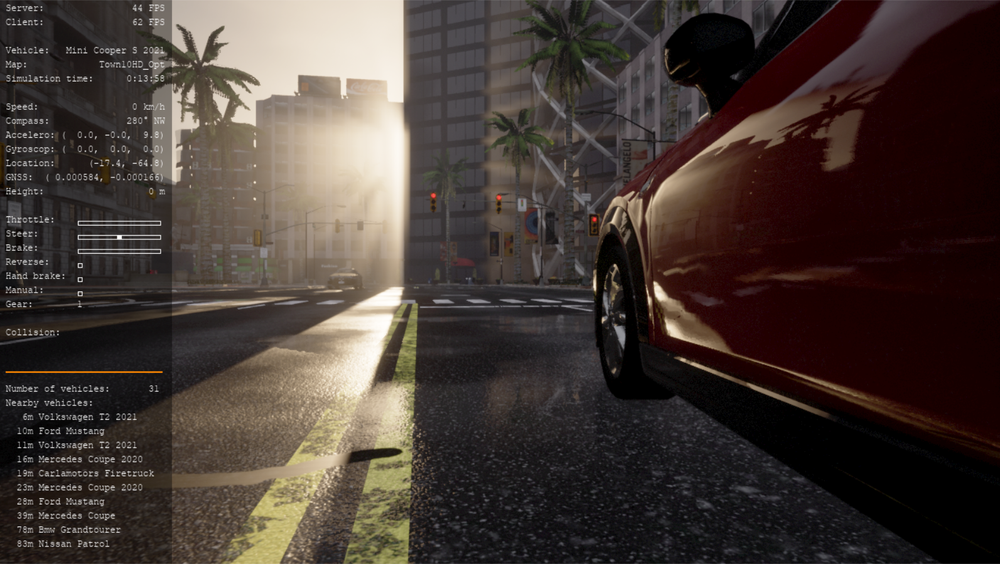
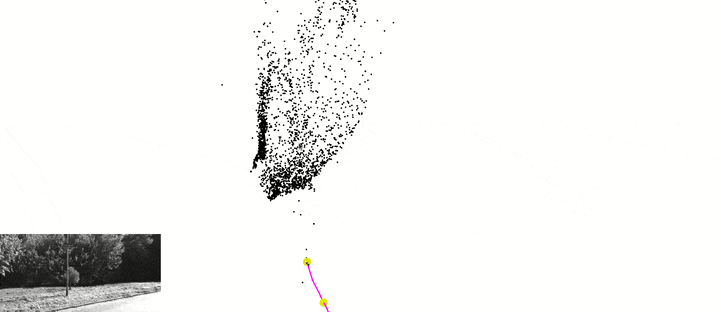
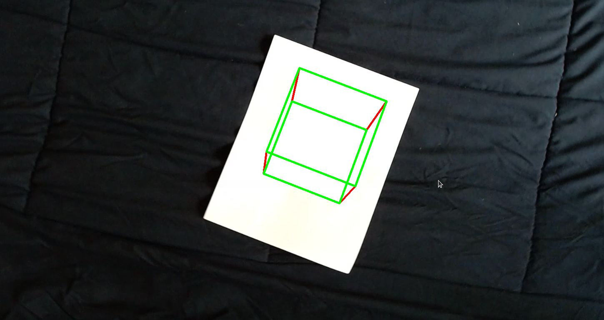
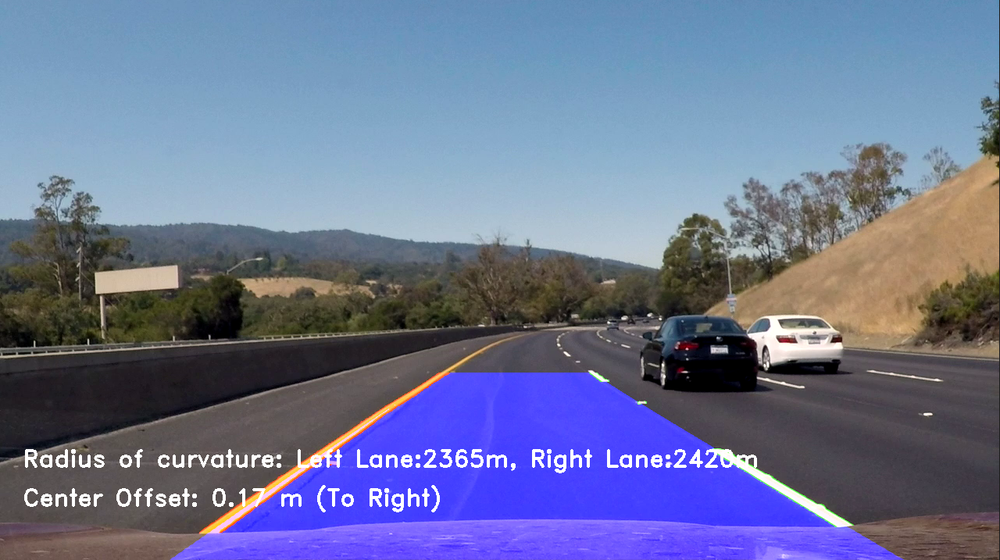
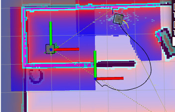
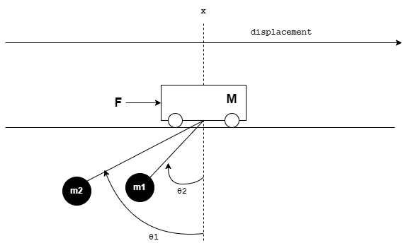
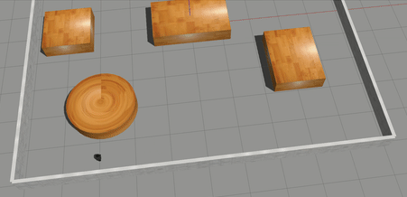

 The RGB camera data is fed to the Deep Neural Network built using the Xception architecture which outputs 3 Q-values. Each Q-value corresponds to an action the agent can take in the environment.
The agent takes an action in every step associated with highest Q-value. The Q-value update is governed by the Bellman Optimality equation while the exploration-exploitation is handled by Epsilon-Greedy algorithm.
The RGB camera data is fed to the Deep Neural Network built using the Xception architecture which outputs 3 Q-values. Each Q-value corresponds to an action the agent can take in the environment.
The agent takes an action in every step associated with highest Q-value. The Q-value update is governed by the Bellman Optimality equation while the exploration-exploitation is handled by Epsilon-Greedy algorithm.

The Simultaneous Localization And Mapping algorithm was developed and tested using the KITTI dataset created using a single monochrome camera mounted on a vehicle.
The algorithm implemented works with an average of 50 FPS. Being a Monocular visual data the depth estimation is done using complex computer vision algorithms.

In this project, an AR tag was detected in a video and an image was superimposed on it. Finally, a 3D cube was
augmented on top of it.

The lane detetcion for autonomous vehicle using image processing techniques was implemented.
The turn radius of the current lane the vehicle is traveling on, is detected and displayed. The
offset from the center of the lane is also detected to maintain the vehicle in the current lane.

In this project the search and rescue mission aiding robots were simulated.
Two turtlebot3 robots were simulated in a custom Gazebo environment. One robot acts as an explorer that autonomously navigates to multiple
target locations and scans for civilians (enacted by fiducial markers, AruCo tags). The second robot is the rescuer which autonomously
navigates to detected civilians in a prioritized order to aid and rescue them.

In this project, a convolutional neural network was designed to extract facial features from the two given
images. The network detects whether the two images belong to the same person or not. Dataset used for this
project is the LFW-dataset

Balancing two pendulums on top of a moving cart is a classic controls theory problem. Various controllers implemented
and analyzed were LQR, LQG, and LQI controllers. The Luenberger observer was also implemented for state estimation of the
model.

In this project, a 3D environment was converted into a 2D map to run a simple search based path planner.
A star path planner calculates the optimal path by using the RPMs of the two wheels of the TurtleBot3 Burger robot as action set parameters.
A publisher sends the RPM values to a simulated robot to navigate to the desired goal in the 3D gazebo environment.

A custom 6 Degree of Freedom robot manipulator arm was modelled in SolidWorks and deployed in Gazebo.
The forward and inverse kinematic equation to calculate the joint angles based on the end-effector position were
formulated. The robot unscrews the vehicle fuel tank lid and places it on the workbench.